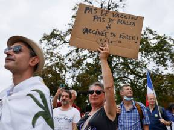
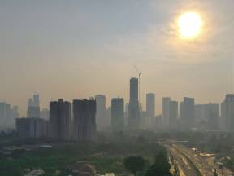
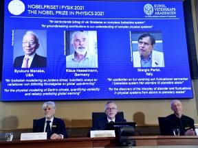
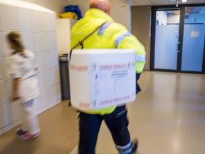
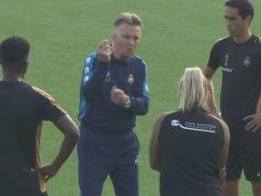
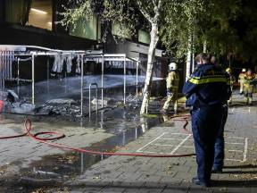
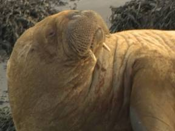
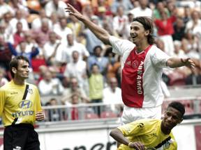

Oranje via 'Panenka' Depay op 3-0 tegen Turkije
-

Frankrijk schorst 3000 zorgmedewerkers die vaccinatieplicht niet nakomen
-

Rechter Indonesië:president moet veel meer doen tegen luchtvervuiling in Jakarta
-

Nobelprijs natuurkunde voor klimaatmodellen en verborgen patronennobelprijs
-

Bijna 5 miljoen Nederlanders geven toestemming voor orgaandonatie
-
Consumenten kopen voor het eerst meer dan voor de coronacrisis
-

Bondscoach Van Gaal op het veld als hoofdtrainer Telstar: 'Louis moet winnen'
-
Marechaussee alert op illegale migratie via Wit-Rusland, hulp aan grens Litouwen
-

Weer brand bij basisschool Oss: 'Dramatisch, dit moet stoppen'
-

Walrus vertrekt weer uit Harlingen na rustpauze
-

Zlatan wordt 40 jaar: zo kijken NAC-spelers terug op die iconische slalom
-
Laatste nieuws
-
13:40
Drie aanhoudingen na bedreiging met vuurwapen op A12
-
13:16
Gastekort dreigt als niemand de regie neemt
-
13:03
Depay ontkomt bij Oranje niet aan Barça-crisis: 'Iedereen doet alsof het al klaar is'
-
11:09
Russische actrice en cameraman onderweg naar ruimtestation ISS
-
11:09
Politiebureau Woerden ontruimd na inleveren handgranaat